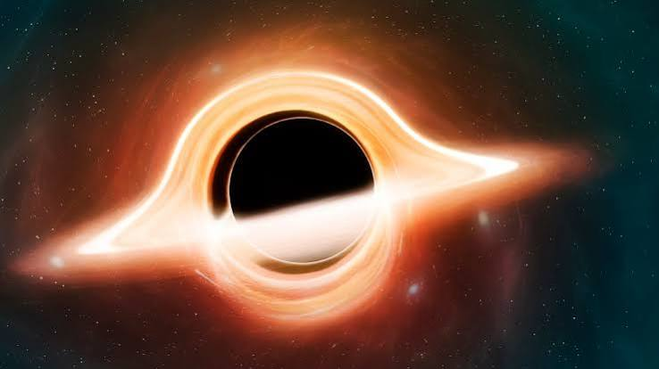
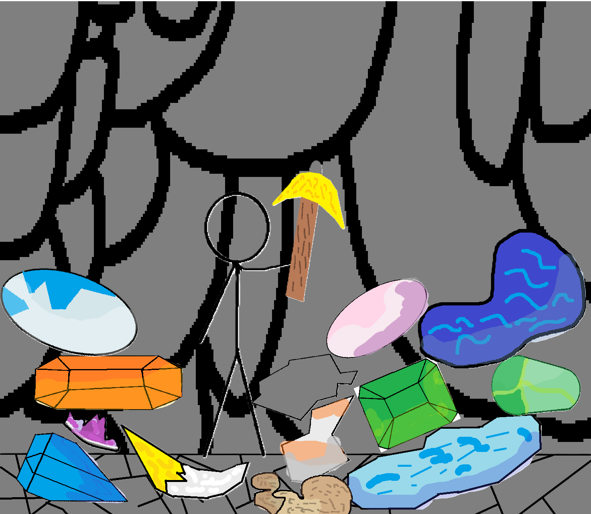
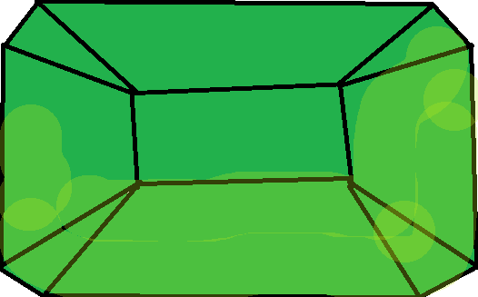

01 / ШАХТА
Копать и находить
Разбивай месторождения, добывай камень и ищи редкие минералы глубоко под землёй.

BLACK HOLEИгра от Black Hole Studio
Исследуй шахту, собирай сокровища, строй из блоков и отправляйся в океан. А приключение только начинается.

ТВОЯ ШАХТА. ТВОЁ ПРИКЛЮЧЕНИЕ.НЕБОЛЬШАЯ ИГРА — БОЛЬШОЙ МИР
Stickman in Mine — приключенческая игра, сделанная русской студией Black Hole.
Начни на поверхности, спустись в шахту за редкими минералами, вернись за покупками или отправься к океану на рыбалку.
Black Hole Studio — самостоятельная российская игровая студия. Она не является филиалом или российским подразделением другой студии с таким же названием.
Мир постепенно пополняется новыми существами, предметами, механиками и модами. Идеи для игры рождаются вместе с её игроками.
ВЫБИРАЙ СВОЙ ПУТЬ
01 / ШАХТА
Разбивай месторождения, добывай камень и ищи редкие минералы глубоко под землёй.
02 / СТРОЙКА
Собирай каменные блоки и строй башни, ставя блоки друг на друга.
03 / ОКЕАН
Доберись до океана, забрось удочку и проверь, что скрывается под водой.
04 / ВМЕСТЕ
Можно отправиться в приключение вдвоём по сети.
ИГРАЙТЕ ВДВОЁМ
Для этого способа оба компьютера должны быть подключены к одной Wi-Fi сети. VPN нужно выключить на обоих компьютерах.
192.168.1.25:44121.СОЗДАНО ДЛЯ STICKMAN IN MINE
Моды добавляют в игру новые предметы и возможности. Это моды именно для Stickman in Mine, они не запускают код Minecraft.
МОД 01 · ЕДА
Иногда выпадает со свиньи. Съешь конфету из рюкзака: она восстановит до 8 здоровья и ускорит игрока на 8 секунд.
Скачать мод
МОД 02 · МИНЕРАЛ
Добавляет в шахту новый минерал. Ищи его в месторождениях и продавай за 800 Громок.
Скачать модКак установить: положи скачанный файл .jar прямо в папку mods рядом с игрой. Архив распаковывать не нужно. Затем перезапусти игру.
ВЕРСИЯ ДЛЯ WINDOWS
Установщик создаст значок игры на рабочем столе. Python устанавливать не нужно. Чтобы обновить игру позже, скачай новую версию установщика и запусти её поверх старой — сохранение останется на месте.
Предупреждение Windows: пока у нас нет времени пройти сертификацию и подписать игру, Windows может показать предупреждение о неизвестном приложении или возможной угрозе. Это предупреждение само по себе не означает, что игра — вирус.
Скачать установщик